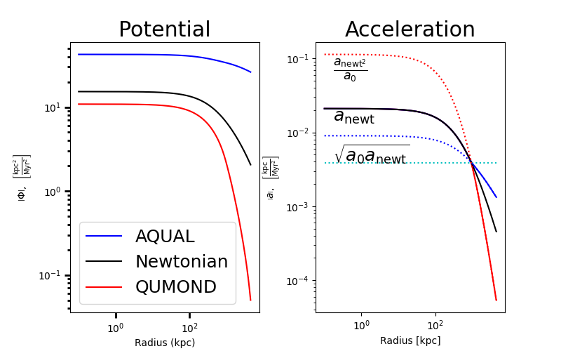

gravity.Potential#
- class gravity.Potential(fields, gravity, attrs)[source]#
The
Potentialclass is a wrapper for a set of modified 1-D poisson solvers which obtain the correct potential of the initialized system for use in determining other criteria of the system.Feature
The
Potentialclass can facilitate the use of MOND gravities through two implementations,AQUALandQUMOND.- Parameters:
fields (
dict) – The fields specified to thePotentialobject. Depending on the methodology used to determine the potential, certain fields must be specified.gravity (
str) – The type of gravity that is in use. Options areAQUAL,QUMOND, orNewtonian.attrs (
dict) –Attributes to pass to the
Potential. These may contain a variety of pieces of information contained in the table below:Attribute Name
Description
Types
Default
interp_functionThe MOND specific interpolation function
callable\(\frac{x}{x+1}\)
a_0The MOND acceleration constant.
unyt float\(1.2\times 10^{-10} \mathrm{\frac{m}{s^2}}\)
Notes
Examples
>>> from cluster_generator.tests.utils import generate_mdr_potential >>> import matplotlib.pyplot as plt >>> >>> m, d, r = generate_mdr_potential() #: Generating the profile from an SNFW profile >>> >>> #- Generating the potential class objects from fields -# >>> pot_AQUAL = Potential.from_fields({"total_mass": m, "total_density": d, "radius": r}, gravity="AQUAL") >>> pot_NEWTONIAN = Potential.from_fields({"total_mass": m, "total_density": d, "radius": r}, gravity="Newtonian") >>> pot_QUMOND = Potential.from_fields({"total_mass": m, "total_density": d, "radius": r}, gravity="QUMOND") >>> #- Plotting >>> figure = plt.figure(figsize=(8,5)) >>> ax = figure.add_subplot(121) >>> ax2 = figure.add_subplot(122) >>> _,_ = pot_AQUAL.plot(fig=figure,ax=ax,color="b",label="AQUAL") >>> _,_ = pot_NEWTONIAN.plot(fig=figure,ax=ax,color="k",label="Newtonian") >>> _,_ = pot_QUMOND.plot(fig=figure,ax=ax,color="r",label="QUMOND") >>> _ = ax.legend() >>> _ = ax2.loglog(pot_QUMOND["radius"].d,np.gradient(pot_QUMOND["gravitational_potential"].d,pot_QUMOND["radius"].d),"r") >>> _ = ax2.loglog(pot_AQUAL["radius"].d,np.gradient(pot_AQUAL["gravitational_potential"].d,pot_AQUAL["radius"].d),"b") >>> _ = ax2.loglog(pot_NEWTONIAN["radius"].d,np.gradient(pot_NEWTONIAN["gravitational_potential"].d,pot_NEWTONIAN["radius"].d),"k") >>> _ = ax2.hlines(y=_default_a_0.to("kpc/Myr**2").d,xmin=np.amin(r.d),xmax=np.amax(r.d),color="c",ls=":") >>> _ = ax2.loglog(pot_NEWTONIAN["radius"].d,(np.gradient(pot_NEWTONIAN["gravitational_potential"].d,pot_NEWTONIAN["radius"].d)**2)/_default_a_0.to("kpc/Myr**2").d,"r:") >>> _ = ax2.loglog(pot_NEWTONIAN["radius"].d,(np.gradient(pot_NEWTONIAN["gravitational_potential"].d,pot_NEWTONIAN["radius"].d)*_default_a_0.to("kpc/Myr**2").d)**(1/2),"b:") >>> _ = ax2.set_xlabel("Radius [kpc]") >>> _ = ax2.set_ylabel(r"$\left|a\right|,\;\;\left[\mathrm{\frac{kpc}{Myr^2}}\right]$") >>> _ = ax.set_ylabel(r"$\left|\Phi\right|,\;\;\left[\mathrm{\frac{kpc^2}{Myr^2}}\right]$") >>> _ = ax2.text(0.17,6e-2,r"$\frac{a_{\mathrm{newt}^2}}{a_0}$") >>> _ = ax2.text(0.17,1.4e-2,r"$a_{\mathrm{newt}}$") >>> _ = ax2.text(0.17,4e-3,r"$\sqrt{a_0a_{\mathrm{newt}}}$") >>> _ = ax.set_title("gravitational_potential") >>> _ = ax2.set_title("Acceleration") >>> _ = plt.subplots_adjust(wspace=0.3)
Methods
__init__(fields, gravity, attrs)from_fields(fields[, gravity])Initializes a
Potentialobject from raw input fieldsfields.from_h5_file(filename)Generates the
Potentialobject from anHDF5file.plot([rmin, rmax, fig, ax])Plot a field vs radius from this model using Matplotlib.
Computes the potential from available fields.
write_potential_to_h5(output_filename[, ...])Write the
Potentialobject to anh5file.Attributes
The potential array of the
Potential.